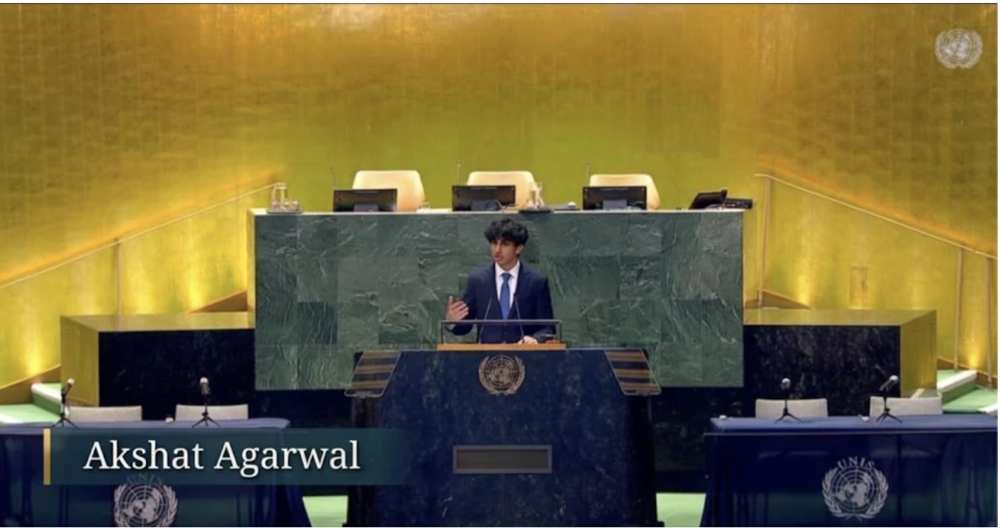

Founder & Executive Director · Neorons
Akshat
Agarwal.
Suicide-prevention legislation and advocacy, from California to international forums.
Connect with NeoronsCalifornia · Enacted
SB 1318.
From advocacy to law.
Signed September 27, 2024
Chapter 645, Statutes of 2024
Akshat Agarwal is the founder and executive director of Neorons. Neorons reports that he helped draft and advance SB 1318 alongside Senator Aisha Wahab, and has made multiple appearances before the California State Assembly.
Governor Gavin Newsom signed SB 1318 on . The law strengthens school suicide-crisis policies, prioritising qualified mental-health professionals.
The contribution described here is Neorons’ account. Official records establish the law’s text and enactment.
United States · 119th Congress
Five federal proposals.
Neorons reports that Akshat contributed to drafting and advocating for these bills. All five have been introduced and remain in committee.
Introduced
- H.R. 5482Prevent Youth Suicide Act
Introduced
Introduced
Introduced
- H.R. 8657Campus Lifeline Act of 2026
Introduced
Status checked November 16, 2026. Each title links to its official GovInfo record.
What the proposals would change
International advocacy · Neorons’ account
Bringing prevention
into the conversation.
Akshat’s advocacy brings youth suicide prevention into international forums. Neorons reports speaking engagements at United Nations conferences in Zimbabwe and Lesotho, alongside work with regional offices in South Africa.
- United Nations
- Presenting Neorons’ work in the General Assembly hall.
- Zimbabwe & Lesotho
- Speaking at UN conferences.
- South Africa
- Working with regional offices.
Work with us
Keep the conversation going.
For speaking invitations, partnerships or media enquiries, contact the Neorons team.
Get in touch